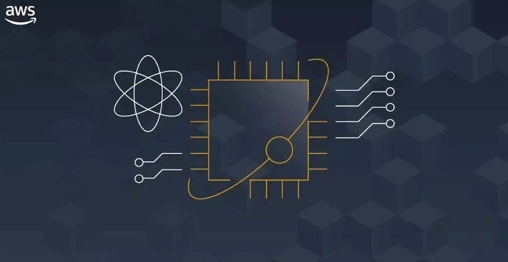
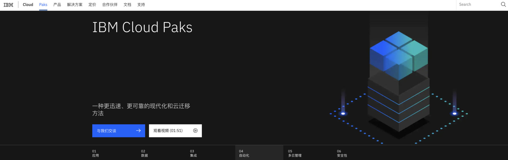
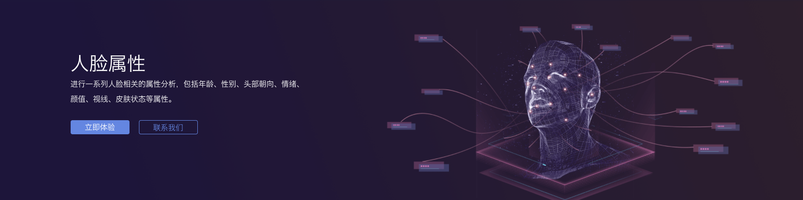
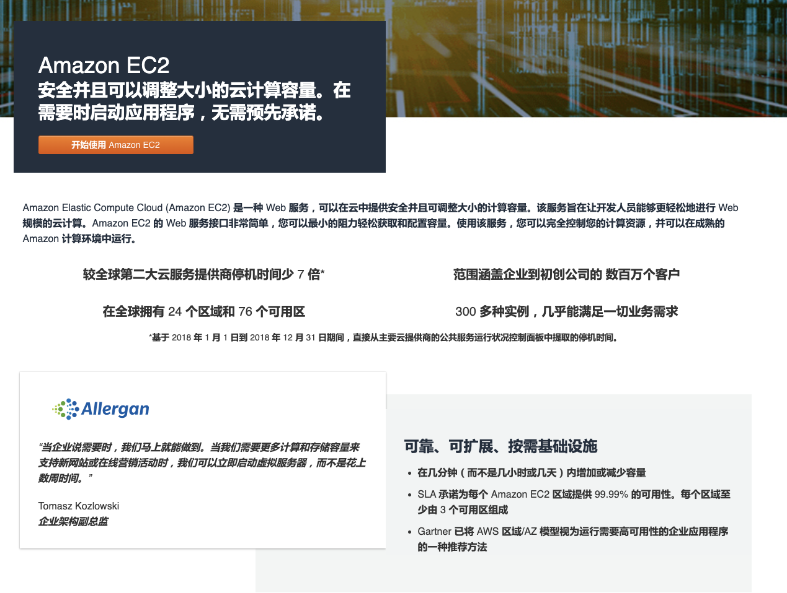
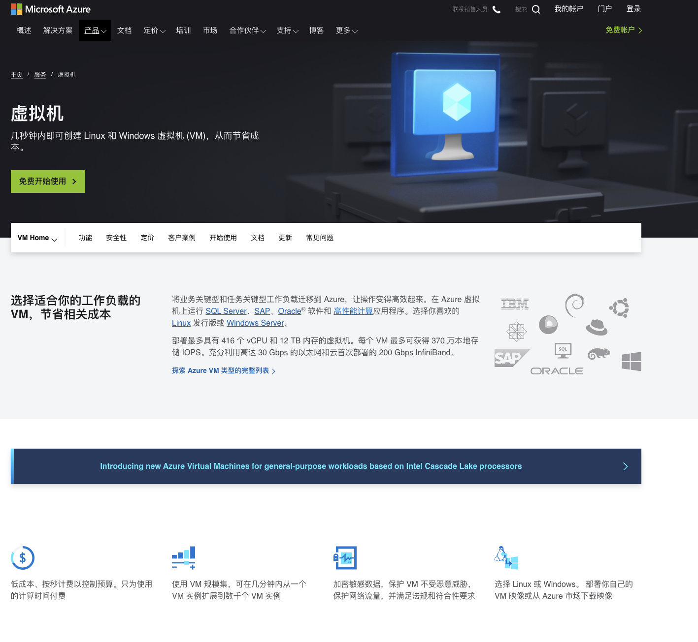
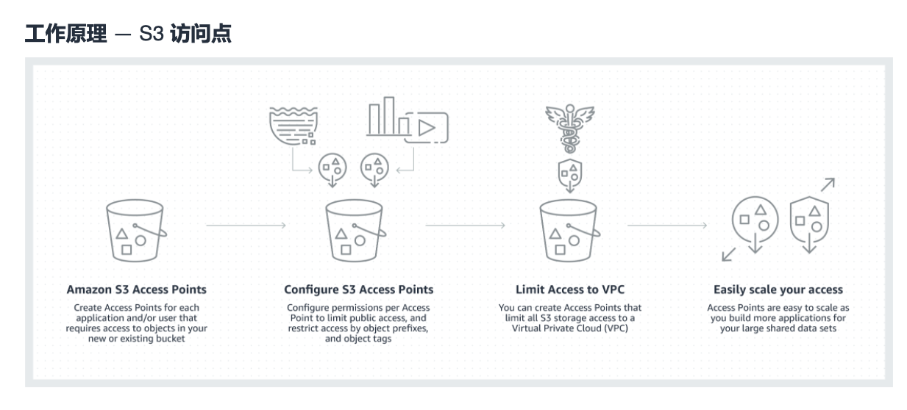
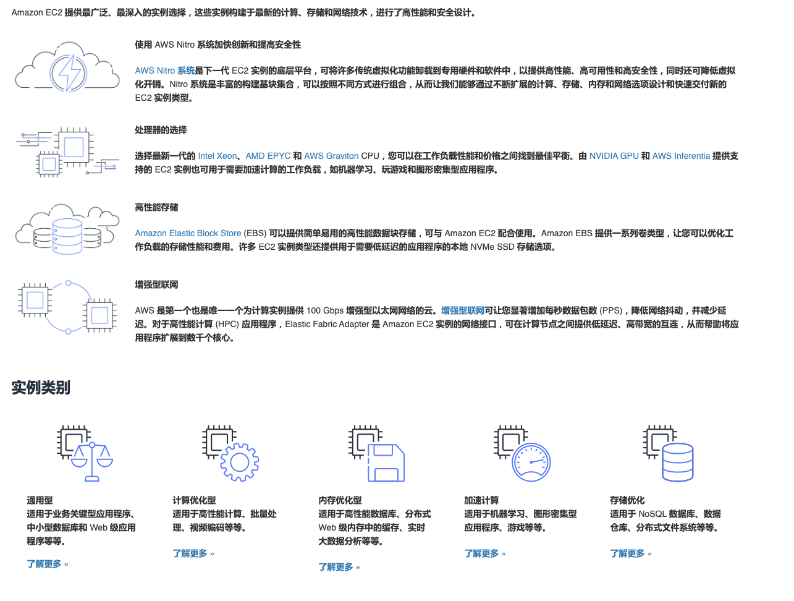

- 00 开篇词 成为下一个万亿市场风口上的操盘人.md.html
- 01 To B市场营销到底是做什么的？.md.html
- 02 To B消费心理学：如何把握客户CEO心理，让他买单？.md.html
- 03 第一印象（上）：如何策划一场产品发布会？.md.html
- 04 第一印象（下）：如何策划一场产品发布会？.md.html
- 05 Leads：如何成体系地寻找高质量的Leads？.md.html
- 06 案例：怎样0成本把一个新产品的市场认知率做到百分之76？.md.html
- 07 产品世界观：如何构建一个好的对外产品故事体系？.md.html
- 08 口碑：如何打造一个有影响力的Demo？.md.html
- 09 后疫情时代，如何做To B市场品牌内容的线上转型？.md.html
- 10 如何用“周边”产品构建To B影响力？.md.html
- 11 打造案例（上）：如何做优质客户案例的选型和内容构造？.md.html
- 12 打造案例（中）：如何引发现象级讨论，打赢PR战役？.md.html
- 13 打造案例（下）：如何通过营销战役把商机转化为销量？.md.html
- 14 颜值美学：如何体现To B产品营销的设计感？.md.html
- 15 如何给企业讲一个“降本”的故事？.md.html
- 16 如何给企业讲一个“增效”的故事？.md.html
- 17 市场中的禁忌：To B营销中容易犯哪些错误？.md.html
- 18 To B营销的阵地：我们在哪里说话，也很重要.md.html
- To B会客厅 SDR是如何优化线索跟进策略，提升销售效能的？.md.html
- To B会客厅 如何通过整体营销迎接后疫情时代的市场挑战？.md.html
- 结束语 一个To B的市场人应该具备怎样的特质？.md.html
- 捐赠
14 颜值美学：如何体现To B产品营销的设计感？
你好，我是曹林。今天我们来聊一下To B的设计美学。
有人说，设计不是设计师团队的管理范畴吗，为什么今天你这个讲市场品牌的课又谈到了设计？其实这源于我之前任职过的一家公司的一个理念，我深以为然，那就是一切与客户接触的东西，都是品牌的一部分。
我举一个例子，一些To B的产品，页面的设计千篇一律，是清一色的图表页面，这样的产品，你很难说它具有什么样的品牌属性。再往下看，你会发现很多To B产品的操作、体验在每一个页面是完全不同的，这就是产品的功能设计不够好。
无论是页面还是功能，这些设计上的问题，最终反映在品牌上，就是低档、不好用、没记忆。所以，构建属于我们自己的企业设计语言，也是我们的市场品牌工作的一部分。
如果今天你们公司的设计师团队已经有了自己的设计语言，而且还能够适应当下的趋势，那么恭喜你，你可以跳过这一节课了。
但如果你正在为自家花花绿绿的产品页面头疼，那么我们一起来聊一聊这个话题吧。其实，这一节课的内容事实上是个跨界的部分，主要是帮助你了解该如何与设计师团队一起，共同让我们的客户一眼从茫茫人海中，认出你所在的公司是一家“不一样的公司”。
我们为什么需要品牌设计语言？
如果说，今天我们要去和一个设计师聊你的品牌视觉形象，那么这场谈话一定是要从设计规范、设计系统开始的。视觉设计系统就是最常见的设计标准化，对颜色、栅格到组件等等都做出了规定。
而我们市场品牌团队通常会和设计师团队配合产出一个成果，叫做《视觉品牌手册》。那么这个《视觉品牌手册》里都包括了什么呢？一个典型的视觉识别品牌手册会包括品牌的LOGO、配色方案、关键的元素、图形运用以及周边及衍生品、广告系统、出版物、PPT模版、网页、会展等场景的正确用法。
这个手册的内容，互联网上非常多，我在这里就不一一列举了。
要完成这样一个市场品牌的物料，往往需要先有一个设计语言的体系，就像我们先有了字母，才有了书籍一样。当然，也有很多企业发展速度很快，在梳理视觉品牌的时候，同步完成了这个工作。
事实上，一个好的设计语言的建立，不仅对于品牌宣传起到了莫大的帮助，更重要的是，在用户的使用场景中不断地建设品牌：为用户带来一致的界面样式、一致的交互逻辑和一致的品牌心智体验。你能想象每个设计师都会自己创造一种日历选择器、一种输入框的产品吗？显然不能。
不仅如此，设计语言甚至能够助力市场开拓。大部分公司都不是独立存在的，往往会有上下游的生态，一起服务客户的伙伴。如果整个生态的用户都能享受到一致的体验，我们就能更好地培养用户的习惯，心智也能得到强化。
如何构建品牌设计语言？
一个让人印象深刻的品牌设计语言，一定是有代表性的。再加上今天To B的品牌设计语言不宜太复杂的需求，在构建品牌设计语言时，我们有必要注意一下它有没有符合简单、对称、有规律感这三个原则。
接下来呢，我给你介绍一些实用的品牌设计语言方法，尽可能与设计师“同频”，帮助你快速地把这些原则应用到品牌市场工作中。没错，我们的目的就是通过视觉语言，让用户快速理解企业的品牌价值。
案例比较难找，所以有些案例并不是那么让人满意，你了解其中的定义就好。
1.极简的图形：通过极简的抽象图形，体现数字化的虚拟世界与现实结合。

利用极简图形作为品牌设计语言，是非常简单清爽的，同时还能够彰显出品牌的品质感，就像一个穿西装绅士在你面前，没有过多的花哨，但是又值得信赖。
但是，这并不意味着我们用极简图形的时候，不用去考虑象征意义和设计的内在联系。对于设计师团队来说，美是第一位的，但是对于我们市场品牌来说，通过设计语言讲什么更加重要。

我们来看一个简单的例子，IBM作为一家综合科技公司，就非常喜欢用立方体，圆柱体，以及多边形等来构成我们的视觉。
这是其企业级全栈式云解决方案——IBM Cloud Paks的首页。我们可以看到，IBM Cloud Paks是一个容器化的解决方案，它的底座象征着云平台本身，而上面的一个个方块则是代表着容器，与底座通过光晕形成一种插接感，体现了容器的灵活性、调度颗粒度，To B的专业用户很容易看出这个极简设计的产品寓意。
所以极简的图形设计，加上我们定义的内涵与寓意，很容易让专业用户产生共鸣，同时极简图像的包容性和抽象性，也能够帮助综合性的科技公司定义其典型品牌特性。
2.曲线/逻辑连接的图形：这类品牌设计本身是严谨偏执的、内在逻辑是自恰的，体现了变化中的关系。

这是国内某人工智能公司的产品页面，我们可以看出，通过曲线以及逻辑连接的图形，我们能够快速地理解产品的功能和能力。
通过产品曲线化的产品抽象场景，以及逻辑连接，我们能够很清楚的知道人脸属性有哪些要点，颜值评分这个功能能够做什么，这就是一个好的设计（未必那么美）。
为什么大数据和AI类的企业会更适合于通过曲线，或者是逻辑图形作为视觉品牌美学的一部分呢？
因为大数据类的企业，以及AI类的企业，本质上是要用生产力的提升重塑和再造流程的。大数据强调对于数据的整合与挖掘能力，AI类的To B企业，强调的是预测与智能对于流程的变革。所以在品牌设计美学上，要让大家一眼看出我们企业的价值，并贯穿到企业品牌的方方面面。
3.充满想象的几何：通过一个或者多个图形，构建起空间关系。
今天计算能力、存储能力、网络能力，这三个基础能力，构成了数字空间的基础物理世界。而数字空间本身就是一个让人觉得既有科技感，又神秘的地方。立体几何构建的空间关系，让人们充满遐想，因此这种由几何构成的空间关系，非常适合数字空间的母体：IaaS层的公司。

阿里云的设计能力堪称To B行业的巅峰，多个几何体与空间的浩瀚感，构成了IaaS企业向客户传递的能力美学：无限的计算能力，海量的存储空间，以及高速的网络。
最后，作为一个品牌市场人，我们要知道，所有的品牌设计本身，都是为了让品牌更易被理解，这是我们于设计师团队合作的一个基础出发点。
如何让品牌更好地被识别？
当我们的设计已经做到可以让品牌更容易被理解后，并不是一切都万事大吉了。我们还需要让品牌更好地被用户识别出来。To B的产品，今天也渐成红海，视觉品牌的质量决定了产品的档次、品质感，以及用户的信赖感，同时视觉品牌的易辨识度，也是我们争夺订单，树立客户初步印象的重要部分。
那么，在整个品牌市场的领域，在设计上我们还可以做哪些事情，让用户能够更好的识别到我们呢？答案有很多，我挑选了一些在与设计师们的沟通中，最常见的内容规范来给你讲讲。
第一，是从色彩下手，建立色彩规范，实现品牌的“一眼辨识”。
今天我们的色彩规范不仅包括LOGO的颜色，还包括了整个以LOGO为基础的衍生品，以及LOGO在诸多场景下的搭配色。一般来说，这些色彩规范完成了以后，在很长的一段时间里，人们一旦看到这个配色，就能清晰地知道这代表的是哪家企业。
例如，我们今天看到这张黄色的小笑脸，就能够想到aws：
这个黄色会不断地在各个地方露出，并在实体照片中作为元素出现。比如下面这个案例中，就是相同的黄色的暖光和背景色为元素来体现的。

第二，是栅格设计规范，创造品牌整体感，保持一致品牌视觉性。栅格是一个能够指导产品中一切视觉元素的基础框架，是产品设计中的视觉基石。
其实栅格系统是从出版物转化过来的概念，原意是在设计一系列某一个板块的版式的时候，用同样的网格系统，保持风格的一致性和统一性，实现工整简洁。使用栅格系统，可以赋予视觉元素以规律的秩序感，从而更高效有序地完成视觉元素搭建，指导更合理的设计页面布局，挖掘更丰富且具有一致性的视觉创意。
所以，栅格系统本身也是品牌整体感的一部分，我们以微软的Azure的官网为例来讲一下。下图是Azure的云服务器官网，我们会看到，上面部分是简介，下面部分是详情以及功能点，这是一个基本的布局。

那我们再看看Azure的数据库页面：

是不是虽然内容有少许变化，但是基本的布局是一致的？这就是栅格系统建立统一的布局，保持用户体验和品牌一致性的一个案例。
第三，是产品设计规范，保持一个品牌、一种体验。每个产品形象的设计表现上根据产品特性各不相同，但整体品牌上要保持统一的特征和特点，所有产品都应遵循统一的设计规范进行设计。
我们可以看到AWS的产品设计，就是一直走扁平化的风格，这样的风格，在产品的各个与用户接触的触点上：产品页面、实用案例、功能介绍、产品控制台。

而我们可以看到Azure则是采用的三维图形化的产品设计风格。
这里我无意就两个风格进行评判，事实上这两个风格也有很多可取的地方，我们的关注重点在于保持统一的设计规范非常重要。我们经常见到一些企业，网页打开是3D的，进入产品控制台是极简的风格，甚至还有多年没有维护的产品页面，使用风格和最新的产品版本大相径庭。这些都是我们市场品牌团队要推进体验改进的地方。
第四，图标设计规范，让万千图标从品牌上看起来就是一家人。
图标作为可视符号，提供了一种 “视觉速记”形式，能够更好地利用熟悉的形状和隐喻以简单的图形形式传达信息。规范图标体系，一方面可以在体验方面保证图标基因元素的一致性，另一方面可以为设计提效保驾护航。
还是回到我们的AWS的案例，AWS所有的产品图标，都是扁平化设计，每一个产品图标都是单色+配色，这样形成的整体性，严谨性和系统性，降低了用户的理解成本，同时实现了比较好的统一性。

第五，插画设计规范，要有创意、直观，但是风格出一门。
2D插画是一种能将产品功能等抽象概念以直观且轻量的方式呈现的视觉表达形式，具有亲和力和易读性。在我们的官网产品详情页、新手引导、大促营销、线下活动等场景都能看到插画的使用。
大厂可能会有一个专门的插画师团队，但是对于中小型的To B企业来说，插画一般是用在公司品牌层的宣传中的（插画成本比较高），例如大型会议、产品发布会等。
规范插画体系，既能提高设计效率，也能保持全站插画语言的一致性，形成品牌辨识度。作为我们设计语言的延伸，一般来说科技企业的插画风格普遍来说应该具有简洁轻巧、以块面为主、几何结构平面化等特征。
你可以看看最近几年比较流行的MG风格插画。

这种风格的插画，能够很好的绘制出用户场景，所以深受科技公司的喜爱。
第六，是实景图像规范：实拍的照片，感受也要统一。
无论在网站上还是线下材料中，摄影素材都能够给予用户对于品牌的第一感受。因为摄影能够还原用户的真实场景，把用户从数字世界带回到现实世界。所以实景图片的构图、用光、色调搭配都非常重要。
一般来说，To B类的宣传实景照片，建议选择用光和色调都比较明快的照片。实景照片上的人物如果处于日常状态（生活、工作），可以面带微笑，如果是一些专业场景，可以比较认真，一丝不苟。切忌采用大面积的阴影（除非刻意要表现某种内容），以及人物表情呆板，缺乏表现力的照片。
我简单的举一个例子，通用电气GE就是一家非常喜欢使用实景图片的公司。
这是GE医疗的一个页面，我们可以看到在专业的场景中，光影自然，色调明快，并且光线柔和，人物照片情绪饱满，工作场景认真专注。这组照片我认为能代表我们To B类企业的照片使用的基本要求。
一套好的照片，是会讲话的品牌视觉语言。如果你有兴趣，可以自学一套摄影课程《美国纽约摄影学院教材》，这是我至今为止看到的最好的摄影类书籍，从最基础的摄影原理到高阶的拍摄技巧，这本书里都有答案。
总结
视觉品牌，是一个市场品牌团队的重要工作之一，但又是一个与设计师团队协作的活儿，对于没有设计师或者设计师比较弱势的中小企业来说，往往通过一次视觉品牌的战役，就能够统一全公司的视觉，以及品牌设计语言体系。
但是对于很多大型企业来说，设计师团队已经非常成熟了，也有了很成熟的设计语言体系。所以在品牌成长的过程中，整个品牌设计的语言体系的迭代，就是一个要协作与磨合的过程。
今天我讲的这些触点，以及一些参考和案例，可能就是我们建立品牌设计语言，品牌设计的美学，并最终帮助企业实现快速辨识、一致体验，获得较高层次的品牌美学的一些基本方法。
对于很多To B企业来说，设计美学的价值往往还没有被正确的认知。事实上，一个好的品牌美学设计，能够帮助用户快速识别产品，同时提升产品本身的品质感。希望你能够在自己的工作场景中，多多注意常见的几种设计语言的构建，以及设计语言通常要规范的范围，最终提升公司与产品的颜值，让产品变得更有质感。
场景练习
如果让你来做极客云的视觉品牌，你会选择怎样的配色？为什么？请你用300字阐述一下你心里的极客云视觉品牌的设计美学。
欢迎在留言区分享你在产品美学上的想法。如果你觉得有所收获，也欢迎你把这一讲分享给你的朋友。
© 2019 - 2023 Liangliang Lee. Powered by gin and hexo-theme-book.